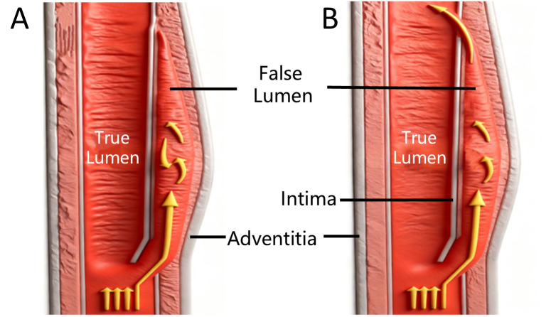
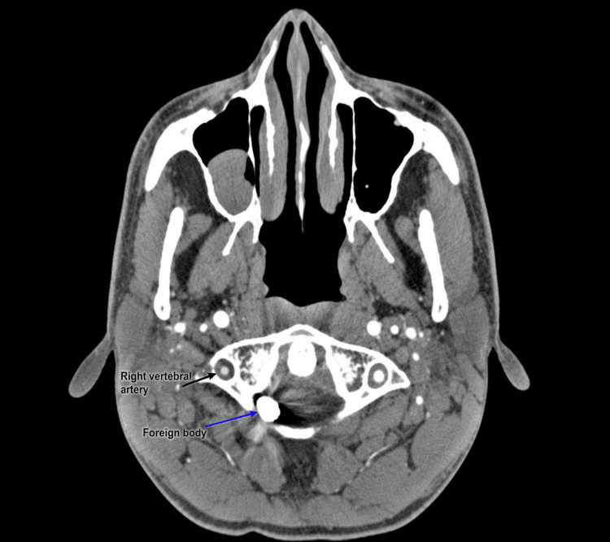
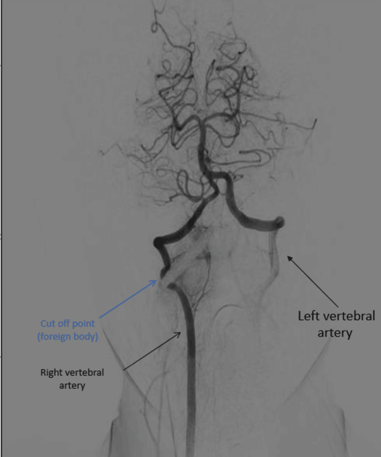

247 — Bóc tách động mạch cổ/đốt sống tự phát & sau chấn thương cổ / Cervical artery dissection (CeAD) & blunt cerebrovascular injury (BCVI)
Tags: pattern:boc-tach-mach-co pattern:hep-long-mach pattern:nhoi-mau-sau vung:mach-co score:Denver-BCVI protocol:CTA-co protocol:MRA-co
Mức chắc chắn (certainty): tổng hợp y văn (literature synthesis) — số liệu từ tổng quan CeAD (PMC9447449, PMC8366117), guideline BCVI 2018 (PMC6206718) và pictorial review (PMC6798777); các ca trong quiz là ca nguyên văn giữ đúng tuổi – cơ chế – chú thích gốc.
Câu chốt: đau cổ/đau đầu sau massage cổ, chấn thương nhẹ hoặc cử động cổ mạnh + Horner, chóng mặt, thiếu máu não sau = nghĩ bóc tách động mạch cổ/đốt sống. CTA cổ là bước đầu, nhưng CTA âm không loại trừ — nghi cao thì MRA/HR-MRI hoặc DSA.
1. Tổng quan bệnh học – cơ chế hình ảnh (TẠI SAO)
- Bóc tách động mạch cổ (cervical artery dissection, CeAD): rách lớp nội mạc → máu tràn vào lớp giữa (media) tạo huyết khối trong thành (intramural hematoma). Hậu quả: hẹp/occlusion lòng mạch, giả phình (pseudoaneurysm) hoặc dò động–tĩnh mạch; cơ chế đột quỵ chủ yếu là thuyên tắc từ huyết khối tại chỗ, không chỉ do giảm tưới máu.
- Dịch tễ: CeAD 2,6–3,0/100.000 người–năm; chiếm tới 25% đột quỵ thiếu máu não cấp ở người trẻ–trung niên và 2–2,5% toàn bộ đột quỵ thiếu máu não (PMC8366117). VAD gây 8–11% đột quỵ ở người trẻ (PMC12742373).
- Triệu chứng tại chỗ: đau đầu/đau cổ 65–95%, TIA/đột quỵ > 50%, Horner không hoàn toàn 25% (PMC9447449). Horner, liệt dây sọ dưới, ù tai mạch đập gợi ý bóc tách động mạch cảnh trong (ICAD) nhiều hơn; đau đầu vùng chẩm, chóng mặt, hội chứng Wallenberg gợi ý bóc tách động mạch đốt sống (VAD) (PMC8366117).
- TẠI SAO hình ảnh thấy bóc tách:
- CTA: thuốc cản quang lấp lòng thật; huyết khối trong thành không ngấm → hẹp hình nón/đuôi chuột (flame-shaped tapering), vách nội mạc (intimal flap), hai lòng (double lumen), giả phình. Dấu chắc nhất là vách nội mạc/hai lòng, nhưng chỉ thấy ở ~22% trường hợp; dấu thường gặp nhất là hẹp lòng không đặc hiệu (> 50%) (PMC6798777).
- MRI T1 fat-sat/black-blood: methemoglobin trong huyết khối thành → dải tăng tín hiệu hình liềm (crescent sign) quanh lòng mạch; tín hiệu phụ thuộc tuổi máu (cấp: đồng/giảm T1; bán cấp: tăng T1).
- MRA: thấy hẹp/occlusion nhưng kém nhạy với huyết khối thành; độ nhạy 50–100%, độ đặc hiệu 30–100% so với DSA (PMC9447449).
- DSA: tiêu chuẩn vàng, thấy vách nội mạc, hai lòng, giả phình, tuần hoàn bàng hệ; nhưng xâm lấn.
- Độ nhạy CTA: so với DSA dao động 65–100% (PMC9447449). Trong chấn thương, gộp Se 66%, Sp 97% (PMC6206718); một số trung tâm báo Se ~98%, Sp ~100% với máy ≥ 64 lát (PMC6798777). Vì vậy CTA âm ở bệnh nhân nguy cơ cao vẫn cần lặp lại hoặc DSA.
- BCVI (blunt cerebrovascular injury): gặp 1–2% dân số chấn thương nhập viện, tới 9% ở chấn thương đầu nặng (PMC6206718). Không điều trị, đột quỵ tới 21%; điều trị sớm giảm còn ~0,5% (PMC6798777).
- Diễn tiến tự nhiên: > 75% CeAD có hẹp/occlusion; 1/5 phát triển giả phình (thường lành tính, nguy cơ vỡ/thuyên tắc thấp); tái phát 3–9%, thường trong 2 tháng đầu; nguy cơ đột quỵ cùng bên trong 12 tháng ~2,4% (PMC9447449).
 32 tuổi, đau đầu chẩm sau massage cổ: (A) CTA trục — hẹp động mạch đốt sống trái V2; (B) CTA dựng hình — occlusion tại chỗ nối V2–V3 (mũi tên xanh); (C) MRA TOF độ phân giải cao trục — hai lòng (đỏ: lòng thật; vàng: lòng giả) + vách nội mạc lệch; (D) mặt cắt vành xác nhận; (E) dựng 3D. Nguồn: Liu J et al., J Belg Soc Radiol 2025 (PMC12742373), Fig. 2, CC BY 4.0.
32 tuổi, đau đầu chẩm sau massage cổ: (A) CTA trục — hẹp động mạch đốt sống trái V2; (B) CTA dựng hình — occlusion tại chỗ nối V2–V3 (mũi tên xanh); (C) MRA TOF độ phân giải cao trục — hai lòng (đỏ: lòng thật; vàng: lòng giả) + vách nội mạc lệch; (D) mặt cắt vành xác nhận; (E) dựng 3D. Nguồn: Liu J et al., J Belg Soc Radiol 2025 (PMC12742373), Fig. 2, CC BY 4.0.
2. Mẫu hình + chẩn đoán phân biệt theo mạch & cơ chế (Gamut)
- Theo mạch bị tổn thương:
- ICA đoạn ngoài sọ: đau cổ/đau đầu, Horner, liệt dây sọ dưới, ù tai mạch đập; nguy cơ nhồi máu bán cầu.
- Động mạch đốt sống V1–V4: V2 (trong lỗ ngang) và V3 (quanh C1–C2) dễ tổn thương nhất do căng/xoay (PMC13340418); hội chứng Wallenberg (nhồi máu hành bên), chóng mặt, thất điều, nhìn đôi.
- Theo cơ chế:
- Tự phát (spontaneous): yếu tố mạch máu nền — loạn sản cơ–sợi (fibromuscular dysplasia, FMD), hội chứng Ehlers–Danlos type IV, di truyền; khởi phát sau vận động nhẹ/massage.
- Chấn thương (traumatic/BCVI): tai nạn giao thông, ngã, nắn chỉnh cổ/chiropractic, massage, chấn thương xuyên thấu; cơ chế gập–xoay (distraction-flexion) là chính (PMC6798777).
- Iatrogenic: đặt catheter, phẫu thuật vùng cổ.
- Theo biểu hiện: nhồi máu não cấp (thuyên tắc), TIA, Horner đơn độc, liệt dây sọ, ù tai mạch đập, giả phình không triệu chứng.
- Chẩn đoán phân biệt “DISSECT”: Dissection, Iatrogenic/trauma, Stenosis do xơ vữa, Strig of beads (FMD), Embolism, Congenital hypoplasia, Temporal arteritis/vasculitis.
- Bẫy vị trí: hẹp V4 trong sọ có thể do bóc tách nội sọ hoặc xơ vữa; hẹp V1 gần nguyên ủy dễ nhầm với mảng xơ vữa.
3. Bảng so sánh phân biệt (ma trận đối chiếu)
| Thực thể (entity) | Hình ảnh điển hình | Chốt vào (rule-in) | Chốt loại (rule-out) | Gợi ý xác nhận |
|---|---|---|---|---|
| CeAD tự phát | Hẹp hình nón/đuôi chuột, vách nội mạc, dải T1 sáng hình liềm trong thành, giả phình | Đau cổ/đau đầu + Horner + hẹp hình nón ở người trẻ không yếu tố xơ vữa | Mảng xơ vữa lệch tâm có vôi hóa, không huyết khối thành → xơ vữa | CTA cổ + MRI T1 fat-sat/black-blood; MRA; DSA |
| BCVI sau chấn thương | Tổn thương tại V2/V3 hoặc ICA đoạn cổ; phân độ Denver I–V; có thể kèm gãy cột sống | Cơ chế năng lượng cao + tiêu chuẩn Denver + tổn thương mạch trên CTA | CTA chất lượng tốt, không tổn thương, nhưng vẫn cần lặp 7 ngày nếu nguy cơ cao | CTA 1 mm; DSA nếu CTA âm mà nghi; lặp 7 ngày |
| Xơ vữa động mạch cảnh | Mảng lệch tâm, vôi hóa, hẹp không đều; thường > 50 tuổi, có yếu tố nguy cơ | Vôi hóa + mảng xơ vữa + hẹp tiến triển chậm | Hẹp hình nón + huyết khối thành + không vôi hóa → bóc tách | Siêu âm Doppler, CTA, MRI mạch |
| FMD | “Chuỗi hạt” (string of beads) nhiều đoạn, thường ICA cổ giữa, hai bên | Nhiều chỗ hẹp–giãn xen kẽ + ít yếu tố nguy cơ + nữ trẻ | Một ổ hẹp hình nón đơn độc → bóc tách | CTA/MRA toàn thân; chụp mạch thận |
| Viêm mạch/RCVS | Hẹp đa ổ, quai mạch; RCVS hồi phục < 3 tháng; viêm mạch có ngấm thành mạch | Hẹp đa ổ hồi phục + bối cảnh co mạch (RCVS); ngấm thành mạch đồng tâm (viêm) | Hẹp khu trú hình nón + huyết khối thành → bóc tách | MRA/CTA lặp; HR-vwMRI; DSA |
| Giảm sản/thiểu sản động mạch đốt sống | Mạch nhỏ đều suốt chiều dài, không hẹp khu trú | Đường kính nhỏ đều, không vách, không huyết khối | Hẹp khu trú + dải T1 sáng → bóc tách | CTA/MRA; so sánh hai bên; MRI black-blood |

Sơ đồ: rách nội mạc cho máu vào lòng giả giữa nội mạc và áo ngoài; lòng thật bị chèn hẹp. Nguồn: Liu J et al., J Belg Soc Radiol 2025 (PMC12742373), Fig. 3, CC BY 4.0.4. Protocol chụp + phân độ Denver + điều trị
4.1. Protocol hình ảnh
- CTA cổ–đầu: lát ≤ 1 mm, bolus tracking, từ quai động mạch chủ đến đỉnh sọ; luôn dựng MPR trục/vành/sagittal và 3D vì tổn thương V2/V3 nằm sát xương, dễ bị che bởi artifact.
- MRI/MRA: T1 fat-sat hoặc black-blood để thấy huyết khối thành; DWI để phát hiện nhồi máu cấp; TOF-MRA đánh giá lòng mạch; HR-MRI khi CTA/MRA không kết luận.
- DSA: chỉ định khi CTA/MRA âm nhưng nghi cao, cần xác nhận vách nội mạc/giả phình, hoặc trước can thiệp nội mạch.
- Siêu âm Doppler: vai trò hạn chế vì không thấy được toàn bộ V2/V3 (PMC6798777) — không dùng để loại trừ.
- Không bỏ sót tổn thương kèm theo: gãy cột sống cổ, gãy sọ, chấn thương mặt — chụp CT cột sống theo tiêu chuẩn chấn thương.
4.2. Tiêu chuẩn sàng lọc Denver mở rộng (BCVI)
Dấu hiệu/triệu chứng: chảy máu động mạch từ cổ/mũi/miệng; tiếng thổi động mạch cảnh ở người < 50 tuổi; khối máu tụ cổ lan rộng; thiếu hụt thần kinh khu trú; khám thần kinh không khớp với CT sọ; đột quỵ trên CT thứ phát.
Yếu tố nguy cơ (cơ chế năng lượng cao): gãy Le Fort II/III; gãy xương hàm dưới; gãy sọ phức tạp/gãy nền sọ/gãy lồi cầu chẩm; TBI nặng GCS < 6; gãy/subluxation/chấn thương dây chằng cột sống cổ bất kỳ tầng; treo cổ gần tử vong; vết đai an toàn có phù/đau/rối loạn ý thức; TBI kèm chấn thương ngực; lột da da đầu; chấn thương mạch ngực; vỡ tim kín; gãy xương sườn trên (PMC6206718).
4.3. Phân độ Denver (BCVI)
| Độ | Tổn thương | Xử trí |
|---|---|---|
| I | Bất thường thành mạch hoặc bóc tách/huyết khối thành < 25% hẹp | Kháng huyết khối; theo dõi |
| II | Huyết khối thành, vách nội mạc nhô hoặc bóc tách > 25% hẹp | Kháng huyết khối; cân nhắc can thiệp nếu tiến triển |
| III | Giả phình (pseudoaneurysm) | Kháng huyết khối; can thiệp nội mạch nếu lớn/dần hoặc có triệu chứng |
| IV | Occlusion mạch | Kháng huyết khối; đánh giá tưới máu/tuần hoàn bàng hệ |
| V | Đứt mạch (transection) | Cấp cứu ngoại khoa/nội mạch |
4.4. Điều trị
- BCVI: khởi động kháng huyết khối sớm trong 24–48 giờ khi an toàn; LMWH liều điều trị, sau đó chuyển aspirin 75 mg/ngày; kéo dài ít nhất 3 tháng (PMC6206718). Trẻ em: aspirin 3–5 mg/kg/ngày.
- Theo dõi hình ảnh BCVI: CTA lặp 7 ngày để xác nhận/loại trừ, và kiểm tra cuối ở 3 tháng (PMC6206718).
- CeAD tự phát — chống đông hay kháng kết tập?
- CADISS (250 BN): đột quỵ cùng bên 2% nhóm kháng kết tập vs 1% nhóm chống đông; 1 xuất huyết dưới nhện ở nhóm chống đông; ở 12 tháng, đột quỵ/TIA 2,4% ở cả hai nhóm (PMC9447449).
- TREAT-CAD (194 BN): aspirin 300 mg/ngày vs VKA trong 3 tháng; đột quỵ/TIA 8% vs 2%; 1 xuất huyết tiêu hóa nặng ở nhóm VKA; aspirin không chứng minh được không thua kém VKA (PMC8366117).
- Kết luận thực hành: cá thể hóa; kháng kết tập hợp lý cho bệnh nhân ít nguy cơ chảy máu, chống đông cân nhắc khi có huyết khối lớn/thiếu máu não; không có bằng chứng mạnh cho một phác đồ duy nhất.
- Đột quỵ cấp do CeAD: cân nhắc tiêu sợi huyết tĩnh mạch và lấy huyết khối cơ học nếu tắc mạch lớn, theo đường đột quỵ chuẩn (PMC8366117).
- Giả phình: phần lớn lành tính; can thiệp nội mạch (stent/coil) khi lớn dần, có triệu chứng thuyên tắc, hoặc hẹp nặng gây thiếu máu (PMC6206718).
- Tái phát 3–9%, thường trong 2 tháng đầu; theo dõi lâm sàng và hình ảnh (PMC9447449).
flowchart TD
A[Chấn thương cổ/đầu + tiêu chuẩn Denver] --> B[CTA cổ 1 mm + dựng MPR/3D]
B --> C{Thấy tổn thương mạch?}
C -->|Không nhưng nguy cơ cao| D[Lặp CTA 7 ngày hoặc DSA]
C -->|Có| E[Phân độ Denver I-V]
E --> F[Kháng huyết khối sớm 24-48 giờ]
F --> G[CTA/DSA lặp 7 ngày + 3 tháng]
G --> H{Giả phình lớn dần hoặc hẹp nặng có triệu chứng?}
H -->|Có| I[Can thiệp nội mạch: stent/coil]
H -->|Không| J[Tiếp tục kháng kết tập ít nhất 3 tháng]
5. Biến thể bình thường và cạm bẫy
- CTA âm không loại trừ BCVI: độ nhạy gộp 66%; nếu nguy cơ cao, lặp CTA 7 ngày hoặc DSA.
- Huyết khối lòng giả có thể làm mạch trông nhỏ đều → nhầm với thiểu sản động mạch đốt sống; tìm dải T1 sáng trong thành và so sánh hai bên.
- Artifact do cử động/nuốt/nền sọ ở V3–V4 dễ giả hẹp; luôn xem MPR và hai bình diện, không kết luận trên một lát.
- Dị vật kim loại có thể tạo artifact trên DSA giả occlusion mạch lân cận — ca PMC13340418 cho thấy DSA ICA phải bị "tắc" giả do dị vật, xác nhận lại bằng CTA/phẫu thuật.
- Không bỏ sót bóc tách đối bên: có thể tổn thương nhiều mạch; chụp toàn bộ cổ, không chỉ bên có triệu chứng.
- Massage cổ/nắn chỉnh cổ là yếu tố khởi phát quan trọng — hỏi tiền sử trong 1–2 tuần trước; bệnh nhân trẻ không có yếu tố nguy cơ mạch máu vẫn có thể bóc tách.
- Không stent giả phình nhỏ không triệu chứng — nguy cơ thủ thuật có thể lớn hơn lợi ích; theo dõi hình ảnh.
6. Tự lượng giá — Blind Quiz
Ca 1 — 32 tuổi, đau đầu chẩm sau massage cổ, chóng mặt thoáng qua rồi thất điều nhẹ.
- Gợi ý: không yếu tố nguy cơ mạch máu; CT sọ có giảm đậm độ tiểu não trái; DWI dương tính.
- Câu hỏi: (1) Tổn thương ở đoạn nào? (2) Ba dấu hiệu CTA/MRA của bóc tách? (3) Vì sao MRA não bình thường không loại trừ?
Bấm để hiện đáp án (findings + chẩn đoán)
- Findings: CTA — hẹp V2 trái và occlusion chỗ nối V2–V3; MRA TOF độ phân giải cao — hai lòng (lòng thật đỏ, lòng giả vàng) với vách nội mạc lệch; mặt cắt vành xác nhận.
- Chẩn đoán: bóc tách động mạch đốt sống trái (VAD) gây nhồi máu tiểu não trái.
- Ba dấu hiệu: hẹp hình nón/đuôi chuột; vách nội mạc; hai lòng/giả phình.
- Vì sao MRA não bình thường không loại trừ: MRA sọ chỉ thấy mạch nội sọ; tổn thương ở V2 ngoài sọ, và huyết khối thành có thể không làm hẹp đủ để thấy trên MRA thường.
- Nguồn ảnh: Liu J et al., J Belg Soc Radiol 2025 (PMC12742373), Fig. 2, CC BY 4.0. Ca nguyên văn: nữ 32 tuổi.
Ca 2 — 32 tuổi, tai nạn do súng bắn vít vào cổ, tỉnh táo, chỉ đau cổ và hạn chế xoay.

- Gợi ý: GCS 15/15, không thiếu hụt thần kinh; CTA ban đầu không thấy bất thường mạch.
- Câu hỏi: (1) Dị vật nằm ở đâu và che lấp gì? (2) CTA âm có đủ loại trừ? (3) Bước xác nhận và xử trí?
Bấm để hiện đáp án (findings + chẩn đoán)
- Findings: dị vật kim loại ở C1–C2, che lấp động mạch đốt sống phải tại chỗ ra khỏi lỗ ngang C2; CTA ban đầu không thấy tổn thương mạch rõ.
- Chẩn đoán: bóc tách/occlusion động mạch đốt sống phải V2 do chấn thương xuyên thấu.
- Bước xác nhận: DSA — hình dưới cho thấy tắc hoàn toàn V2 phải với tuần hoàn bàng hệ qua động mạch đốt sống trái; xử trí lấy dị vật + đánh giá mạch, cân nhắc kháng huyết khối/theo dõi.

- Bài học: CTA âm không loại trừ khi dị vật/kim loại che lấp hoặc tổn thương khu trú; DSA là chìa khóa. Dị vật còn có thể gây artifact giả tắc mạch lân cận trên DSA.
- Nguồn ảnh: Alahmed AY et al., Cureus 2026 (PMC13340418), Fig. 2, CC BY 4.0. Ca nguyên văn: nam 32 tuổi.
Ca 3 — Hình giải phẫu: đọc sơ đồ trước khi trả lời.
- Câu hỏi: (1) Lòng thật và lòng giả nằm ở đâu? (2) Vì sao lòng thật bị hẹp? (3) Dấu hiệu nào trên CTA giúp phân biệt với mảng xơ vữa?
Bấm để hiện đáp án (findings + chẩn đoán)
- Findings: lòng thật nằm trong, được lót bởi nội mạc; lòng giả nằm giữa nội mạc và áo ngoài (adventitia), chứa máu/huyết khối; vách nội mạc tách hai lòng.
- Vì sao hẹp: huyết khối trong thành + lòng giả chèn ép lòng thật → hẹp/occlusion; huyết khối tại chỗ có thể thuyên tắc.
- Phân biệt với xơ vữa: bóc tách có vách nội mạc/hai lòng/hẹp hình nón, không vôi hóa, bệnh nhân trẻ; xơ vữa có mảng lệch tâm, vôi hóa, hẹp không đều.
- Nguồn ảnh: Liu J et al., J Belg Soc Radiol 2025 (PMC12742373), Fig. 3, CC BY 4.0.
Bài liên quan chéo
- 227 – Đau đầu sét đánh: SAH / RCVS / CVST / u tuyến yên / bóc tách
- 245 – U tuyến yên chảy máu/nhồi máu & suy tuyến yên cấp
- 211 – Đột quỵ não
- 200 – Tổng quan hệ Thần kinh
Không dùng để chẩn đoán độc lập khi chưa có người hướng dẫn.